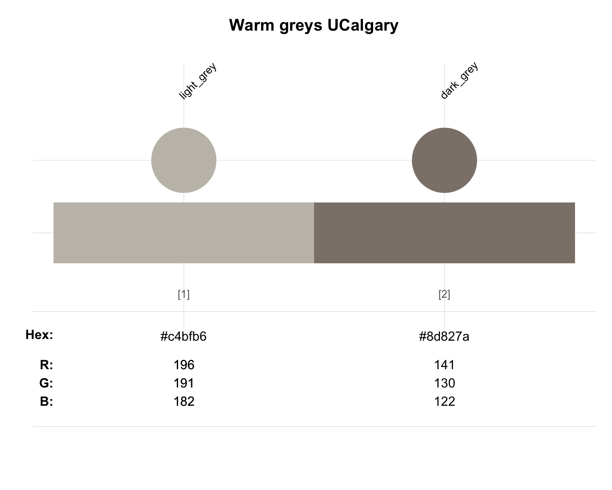

ucalgary_warmgreys provides the warm greys
of the University of Calgary, Canada.
Source
Colour definitions are based on UCalgary's Visual identity standards (PDF).
Details
The colours are
"light_grey" (defined as HEX #c4bfb6) and
"dark_grey" (defined as HEX #8d827a).
See also
ucalgary_1 for the primary colours of the University of Calgary;
ucalgary_2 for the secondary colours of the University of Calgary;
ucalgary_accent for the accent colours of the University of Calgary;
seecol for viewing and comparing colour palettes;
usecol for using colour palettes;
simcol for finding similar colours;
newpal for defining new colour palettes;
grepal for finding named colours.
Other Canadian university color palettes:
carleton,
concordia_1,
concordia_2,
concordia_3,
concordia_4,
guelph,
laval,
manitoba_1,
manitoba_2,
mcgill_brights,
mcgill_darks,
mcgill_grey,
mcgill_muted,
mcgill_pastels,
mcgill_red,
mcmaster_brighterworld,
mcmaster_heritage,
mun_1,
mun_2,
queensu_1,
queensu_2,
sfu_brand,
ubc,
ucalgary_1,
ucalgary_2,
ucalgary_accent,
uottawa,
utoronto,
uvic_1,
uvic_2,
uwaterloo_arts,
uwaterloo_engineering,
uwaterloo_environment,
uwaterloo_health,
uwaterloo_main,
uwaterloo_math,
uwaterloo_science,
western_uni,
yorku_1,
yorku_2
Examples
ucalgary_2
#> light_orange dark_orange berry brown
#> "#ffa300" "#ff671f" "#a6192e" "#6b3529"
unikn::seecol(ucalgary_warmgreys, main = "Warm greys UCalgary") # view colour palette
